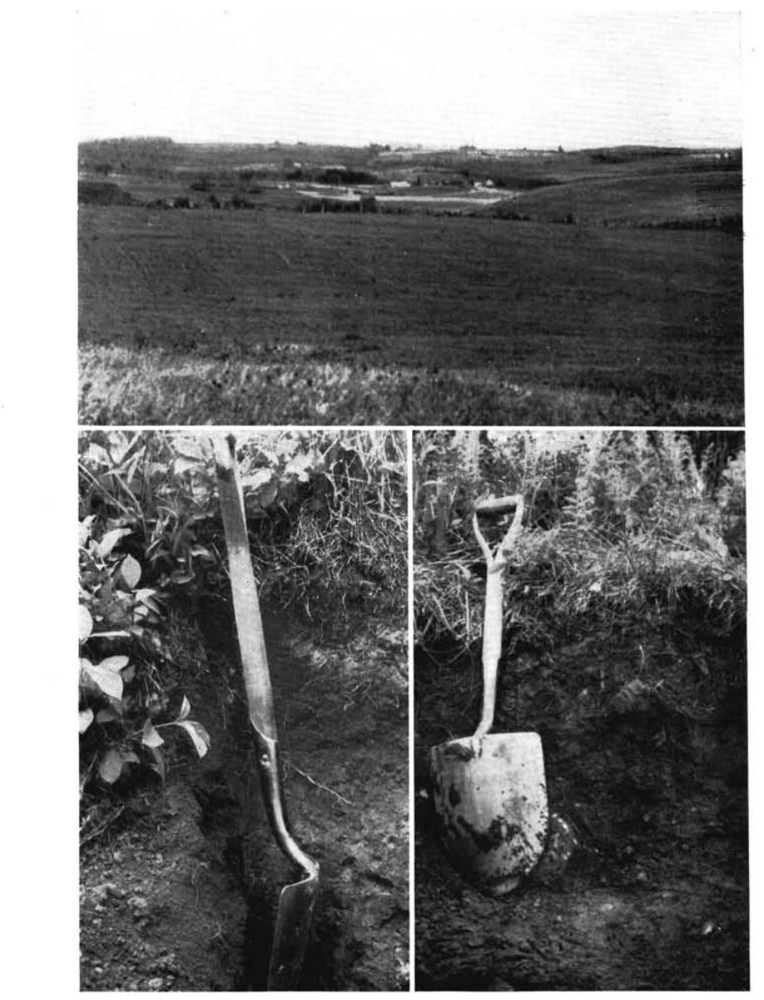

Identification & Caractéristiques Générales
Les sols de la série Greensboro se sont développés à partir d'un till morainique basal ou ablatif, dont le matériel parental dérive principalement de roches sédimentaires et métasédimentaires locales, notamment des schistes ardoisiers et des microgrès ardoisiers de la formation de Compton. Localement, une altération in situ de ces roches mères peut conférer au profil un caractère résiduel partiel. Sur le plan géomorphologique, cette série occupe les secteurs de terres hautes caractérisés par une topographie inclinée à ondulée, où les pentes varient généralement de 5 % à 12 %.
Le profil morphologique présente un bon à modéré drainage naturel, associé à une perméabilité interne adéquate favorisée par l'absence de nappe phréatique permanente restrictive dans la zone supérieure du profil. En terrain cultivé, l'horizon de surface, d'une épaisseur moyenne de 15 cm, est constitué d'un loam de couleur gris foncé à gris-brun, doté d'une structure granulaire fine faiblement à modérément développée. Ce sol incorpore de 10 % à 20 % en volume de fragments grossiers constitués de graviers et de cailloux anguleux, avec une pierrosité de surface variant de faible à forte. La réaction chimique de la matrice meuble est fortement acide, et la teneur en matière organique de l'horizon de surface y est élevée.
Sur le plan agronomique, ces sols présentent de bonnes aptitudes pour la production agricole et font l'objet d'une mise en valeur historique prolongée. La pierrosité y est généralement suffisamment faible pour permettre l'utilisation des machinery agricoles conventionnelles. Les principales cultures pratiquées comprennent le foin, les céréales à paille et le maïs-fourrage, affichant des rendements stables et supérieurs comparativement aux autres séries de sols des terres hautes avoisinantes. Les principales contraintes agronomiques résident dans la forte acidité du milieu, nécessitant des apports réguliers de chaulage pour optimiser le pH, ainsi que dans la gestion du relief en pente qui impose des pratiques de conservation des sols afin de limiter les risques d'érosion hydrique lors des labours.
Classification Taxonomique & Environnement Pédologique
| Ordre Pédologique | Brunisolique |
|---|---|
| Grand Groupe (SCSS) | Brunisol dystrique |
| Sous-Groupe Taxonomique | Brunisol dystrique orthique |
| Famille Pédologique | Loameuse-fine, mixte sableux, neutre |
| Mode de Dépôt Parental | Morainique |
| Classe de Drainage Naturel | Bien drainé |
| Régime Thermique & Humidité | Frais / Subhumide |
Description Morphologique du Profil Type
Séquences génétiques des horizons pédologiques caractérisant le profil type représentatif de la série Greensboro :
Profil cultivé (agricole) — Comté de Frontenac
✓ Source : Comté de Frontenac — Page 24Couleur Munsell : 2.5Y 3/4, 2.5Y 6/2
Structure & Consistance : Granulaire
Description morphologique : Loam brun-gris très foncé à olive (2.5 Y 3/4 h), gris-brun clair (2.5 Y 6/2 s); structure granulaire, fine, faible et polyédrique subangulaire, moyenne, faible; friable; racines très abondantes, très fines et fines, non orientées, endo et exo-agrégat; assez poreux; concrétions, durinodes; fragments grossiers, graveleux, environ 20% en volume; effervescence forte au peroxyde 3-4%; limite nette, régulière; épaisseur de 22 à 28 cm; extrêmement acide.
Couleur Munsell : 10YR 3.5/2.5 (matrice), 2.5Y 6.5/2 (marbrures)
Structure & Consistance : Lamellaire
Description morphologique : Loam brun-gris foncé à brun foncé (10 YR 3.5/2.5 h), gris brun clair à gris clair (2.5 Y 6.5/2 s); marbrures assez nombreuses, petites, faibles (10 YR 5/7 h) et quelques marbrures, petites, faibles (2.5 Y 4/1 s); structure lamellaire, fine, très faible, polyédrique angulaire, fine à moyenne, faible et granulaire très fine à fine, très faible; très friable; racines très abondantes, très fines et fines, non orientées, endo et exo-agrégat; assez poreux; pellicules argileuses, nombreuses, très minces, dans plusieurs vides et canaux et sur quelques faces verticales et horizontales des agrégats; concrétions, durinodes; fragments grossiers, graveleux ardoisiers en prédominance, environ 20% en volume; effervescence forte au peroxyde 3-4%; limite nette, ondulée; épaisseur de 6 à 10 cm; extrêmement acide.
Couleur Munsell : 2.5Y 5/5 (matrice), 2.5Y 6.5/3 (marbrures)
Structure & Consistance : Polyédrique subangulaire
Description morphologique : Loam limoneux graveleux olive clair (2.5 Y 5/5 h), brun-jaune clair (2.5 Y 6.5/3 s); quelques marbrures, petites, distinctes, brun-jaune (10 YR 5/7 h) et marbrures assez nombreuses, petites, distinctes, olive clair (2.5 Y 5/3 h); structure polyédrique subangulaire, moyenne, faible à modérée et granulaire, fine, très faible; ferme; peu de racines, très fines et fines, verticales, exo-agrégat; assez poreux; pellicules argileuses, nombreuses, minces, dans plusieurs vides et canaux et sur quelques faces verticales et horizontales; concrétions, déjections de vers, peu nombreux, fines; fragments grossiers, graveleux, ardoisiers en prédominance, environ 30% en volume; effervescence forte au peroxyde 3-4%; limite nette, ondulée; épaisseur de 8 à 16 cm; fortement acide.
Couleur Munsell : 10YR 5/5 (matrice), 2.5Y 5.5/3 (marbrures)
Structure & Consistance : Lamellaire
Description morphologique : Loam brun-jaune (10 YR 5/5 h), gris-brun clair à brun-jaune clair (2.5 Y 5.5/3 s); quelques marbrures, petites, faibles brun-jaune (10 YR 5/7 h) et quelques marbrures, petites, faibles, olive clair (2.5 Y 5/3 h); structure lamellaire, fine, faible et polyédrique subangulaire, fine, faible; friable; très peu de racines, très fines, verticales, jusqu'à 50 cm, exo-agrégat; assez poreux; pellicules argileuses, communes, très minces, dans plusieurs vides et canaux et sur quelques faces verticales et horizontales des agrégats; concrétions, fer-manganèse; fragments grossiers, graveleux; ardoisiers en prédominance environ 20% en volume; effervescence forte au peroxyde 3-4%; limite graduelle, ondulée; épaisseur de 4 à 24 cm; faiblement acide.
Couleur Munsell : 2.5Y 4.5/6 (matrice), 2.5Y 6/4 (marbrures)
Structure & Consistance : Polyédrique angulaire
Description morphologique : Loam olive à olive clair (2.5 Y 4.5/6 h), brun-jaune clair (2.5 Y 6/4 s); quelques marbrures, petites, très marquées, brun vif (7.5 YR 5/7 h) et marbrures assez nombreuses, moyenne, faibles, olive clair (2.5 Y 5/3 h); structure polyédrique angulaire, très fine à fine, faible à modérée; friable; assez poreux; pellicules argileuses, communes, très minces, dans plusieurs vides et canaux et sur quelques faces verticales et horizontales des agrégats; concrétions, fer-manganèse; fragments grossiers, graveleux; ardoisiers en prédominance environ 20% en volume; effervescence forte au peroxyde 3-4%; limite graduelle, ondulée; épaisseur de 4 à 24 cm; faiblement acide.
Couleur Munsell : 2.5Y 4.5/6 (matrice), 2.5Y 6/3 (marbrures)
Structure & Consistance : Lamellaire
Description morphologique : Loam olive à olive clair (2.5 Y 4.5/6 h), gris-brun clair à brun-jaune clair (2.5 Y 6/3 s); quelques marbrures, moyennes, faibles, olive clair (2.5 Y 5/5 h) et quelques marbrures, petites, distinctes brun-jaune (10 YR 5/7 h); structure lamellaire, moyenne, faible et polyédrique angulaire, moyenne, faible; ferme à friable; pellicules argileuses, peu nombreuses, très minces, dans plusieurs vides et canaux et sur quelques faces verticales et horizontales des agrégats; concrétions, oxydes; fragments grossiers, graveleux, ardoisiers en prédominance, environ 20% en volume; effervescence forte au peroxyde 3-4%; modérément acide. présence de la nappe phréatique à 90 cm.
Profil forestier (sous boisé) — Comté de Frontenac
✓ Source : Comté de Frontenac — Page 26Couleur Munsell : Non précisée
Structure & Consistance : Polyédrique à granulaire
Description morphologique : Litière très mince discontinue.
Couleur Munsell : 10YR 3/2
Structure & Consistance : Granulaire
Description morphologique : Loam argileux très pierreux surtout granitique brun gris très foncé (10 YR 3/2 h); structure granulaire, fine, très friable; racines très abondantes, de toutes les grosses, non orientées, endo et exo-agrégats; fragments grossiers, caillouteux et pierreux, surtout granitique, environ 50% en volume; effervescence modérée au peroxyde 3-4%; limite nette, ondulée; épaisseur de 1 à 5 cm; extrêmement acide.
Couleur Munsell : 10YR 3/1
Structure & Consistance : Polyédrique subangulaire
Description morphologique : Loam fin gris très foncé (10 YR 3/1 h); structure polyédrique subangulaire, fine, modérée et granulaire, fine à moyenne, modérée; très friable; racines très abondantes, de toutes les gros, non orientées, endo et exo-agrégats; très poreux; fragments grossiers, graveleux surtout ardoisiers, environ 20% en volume; effervescence modérée au peroxyde 3-4%; limite nette, ondulée; épaisseur de 25 à 39 cm; fortement acide.
Couleur Munsell : 2.5Y 3.5/2
Structure & Consistance : Polyédrique subangulaire
Description morphologique : Loam fin brun-gris très foncé à brun-gris foncé (2.5 Y 3.5/2 h); structure polyédrique subangulaire, fine, modérée et granulaire, fine à moyenne, modérée; très friable; racines très abondantes, de toutes les grosseurs, non orientées, endo et exo-agrégats; très poreux; fragments grossiers, surtout ardoisiers, environ 25% en volume; effervescence faible au peroxyde 3-4%; limite graduelle, ondulée; épaisseur de 15 à 20 cm; très fortement acide.
Couleur Munsell : 2.5Y 3.5/2
Structure & Consistance : Polyédrique subangulaire
Description morphologique : Sable limoneux fin brun-gris très foncé à brun-gris foncé (2.5 Y 3.5/2 h); structure polyédrique subangulaire, fine, faible à modérée et granulaire, fine, faible à modérée; très friable; très poreux; fragments grossiers, surtout ardoisiers, environ 25% en volume; effervescence faible au peroxyde 3-4%; limite graduelle, ondulée; fortement acide.
Couleur Munsell : 2.5Y 4/2
Structure & Consistance : Granulaire
Description morphologique : Sable limoneux fin brun-gris foncé (2.5 Y 4/2 h); quelques marbrures, moyennes, distinctes; structure granulaire, fine, modérée et polyédrique subangulaire, très fine à fine, faible; très friable; racines abondantes, fines, très fines et micro-racines, verticales et obliques, endo et exo-agrégats; assez poreux; fragments grossiers, ardoisiers, environ 20% en volume; effervescence faible au peroxyde 3-4%; limite nette, interrompue; épaisseur de 0 à 10 cm; modérément acide.
Couleur Munsell : 2.5Y 4.5/2 (matrice), 2.5Y 4/23 (marbrures)
Structure & Consistance : Polyédrique angulaire
Description morphologique : Sable limoneux graveleux fin brun-gris foncé à brun-gris (2.5 Y 4.5/2 h); marbrures assez nombreuses, grandes, faible, brun-gris foncé à olive (2.5 Y 4/23 h); structure polyédrique angulaire, moyenne, faible; très friable; racines abondantes, fines et très fines, verticales, endo et exo-agrégats; assez poreux; fragments grossiers, surtout ardoisiers, environ 30% en volume; effervescence très faible au peroxyde 3-4%; limite nette, ondulée; épaisseur de 5 à 10 cm; modérément acide.
Couleur Munsell : 5Y 4.5/1 (matrice), 2.5Y 4/3 (marbrures)
Structure & Consistance : Polyédrique à granulaire
Description morphologique : Loam gris foncé à gris (5 Y 4.5/1 h); marbrures nombreuses, grandes, très marquées, brun-gris foncé à olive (2.5 Y 4/3 h); polyédrique angulaire, fine à moyenne, faible et lamellaire, fine à moyenne, faible; ferme à friable; très peu de racines, fines, verticales, exo-agrégats jusqu'à 110 cm; peu poreux; fragments grossiers, ardoisiers, environ 10% en volume; effervescence très faible au peroxyde 3-4%; faiblement acide.
Profil forestier (sous boisé) — Comté de Beauce
✓ Source : Comté de Beauce — Page 58Couleur Munsell : 10YR 2/1, 5YR 2/1
Structure & Consistance : Polyédrique à granulaire
Description morphologique : Horizon organique noir (10 YR 2/1 h), noir (5 YR 2/1 s); granulaire, très fine, faible; très friable; racines très abondantes, de toutes les grosses, non orientées; fragments grossiers, à graviers anguleux, à cailloux anguleux, 10 % en volume; limite abrupte, régulière; épaisseur de 3 à 7 cm; extrêmement acide.
Couleur Munsell : 5YR 5/7, 10YR 5/5
Structure & Consistance : Polyédrique à granulaire
Description morphologique : Loam brun vif (7,5 YR 5/7 h), brun jaune (10 YR 5/5 s); granulaire, fine, faible; très friable; racines très abondantes, de toutes les grosses, non orientées; fragments grossiers, à graviers anguleux, à cailloux anguleux, de 20 % à 30 % en volume; limite nette, onduleuse; épaisseur de 3 à 9 cm; très fortement acide.
Couleur Munsell : 5Y 6/5, 5Y 5/1
Structure & Consistance : Polyédrique à granulaire
Description morphologique : Loam brun jaune clair à jaune olive (2,5 Y 6/5 h), brun gris à gris (2,5 Y 5/1 s); polyédrique subangulaire, très fine, très faible; très friable; racines abondantes, moyennes, fines, très fines, microracines, obliques; fragments grossiers, à graviers anguleux, à cailloux anguleux de 20 % à 30 % en volume; limite graduelle, régulière; épaisseur de 21 à 28 cm; très fortement acide.
Couleur Munsell : 5Y 5/3 (matrice), 5Y 7/2 (marbrures)
Structure & Consistance : Polyédrique à granulaire
Description morphologique : Loam olive (5 Y 5/3 h), gris clair (2,5 Y 7/2 s); marbrures fréquentes, fines, marquées, brun jaune (10 YR 5/6 s); polyédrique subangulaire, fine, modérée; racines très peu abondantes, très fines, microracines, obliques; fragments grossiers, à graviers anguleux, à cailloux anguleux, 30 % en volume; peu acide.
Profils Photographiques & Planches de Terrain
Documents iconographiques, figures pédologiques et coupes de terrain documentées dans les mémoires d'inventaire pour de la série Greensboro :


Propriétés Physico-Chimiques & Analyses de Laboratoire
| Horizon | Prof. limite | pH (H₂O) | M.O. % | C tot. % | N tot. % | C.E.C. (cmol/kg) | Sable % | Limon % | Argile % | P Meh3 (mg/kg) | K (cmol/kg) | Ca (cmol/kg) | MVA (g/cm³) |
|---|---|---|---|---|---|---|---|---|---|---|---|---|---|
| Ap1 | 12.0 cm | 6.33 | 4.41 | 2.56 | 0.23 | 16.6 | 39.3 | 47.3 | 13.5 | 113.3 | 0.27 | 6.57 | 1.21 |
| Ap2 | 30.0 cm | 6.28 | 3.64 | 2.11 | 0.19 | 15.5 | 39.9 | 46.9 | 13.2 | 91.5 | 0.13 | 5.82 | 1.29 |
| B | — | 6.37 | 1.81 | 1.05 | 0.1 | 11.1 | 39.9 | 45.5 | 14.6 | 48.5 | 0.1 | 3.38 | 1.5 |
Particularités Régionales, Phases & Variantes Pédologiques
Déclinaisons régionales, faciès texturaux, phases d'érosion ou de pierrosité et variantes cartographiées par étude pour de la série Greensboro :
| Étude Régionale | Symbole | Appellation / Phase / Variante | Différenciation avec la série type (Analyse pédologique) |
|---|---|---|---|
| Comté de Beauce | Gr |
Greensboro loam ou loam limoneux | Modalité modale de référence (type de base de la série). |
| Comté de Stanstead | Gl |
Greensboro loam | Faciès textural de surface loam (distinct du loam limoneux de référence). |
Glr |
Greensboro loam très vallonné | Faciès textural de surface loam (distinct du loam limoneux de référence). | |
Glsh |
Greensboro loam mince | Phase mince sur substrat rocheux (< 50 cm); Faciès textural de surface loam (distinct du loam limoneux de référence). | |
RsGl |
Greensboro | Conforme à la série type de référence (caractéristiques texturales et drainage identiques). | |
| Comté de Frontenac | Gr |
Greensboro loam à loam limoneux | Conforme à la série type de référence (caractéristiques texturales et drainage identiques). |
Gr* |
Greensboro loam à loam limoneux à surface granitique pierreuse | Conforme à la série type de référence (caractéristiques texturales et drainage identiques). |
Distribution Pédo-Paysagère & Représentativité Cartographique (Couverture PPS 2026)
- Calais loam ou loam limoneux (CIS) — co-occurrente dans 983 polygone(s)
- Aylmer loam à loam sableux (AYL) — co-occurrente dans 434 polygone(s)
- Gayhurst loam ou loam limoneux (GAY) — co-occurrente dans 309 polygone(s)
Aptitudes Agronomiques, Hydropédologie & Conservation des Sols
Indicateurs Hydropédologiques & Vulnérabilité à l'Érosion (BDHP 2026)
Interprétation BDHP : Potentiel de ruissellement modérément élevé. Faible taux d'infiltration, présence d'horizons ralentissant le drainage descendant.
Classement selon l'Inventaire des Terres du Canada (ITC / CLI) : Classe 1.
- Potentiel agricole : Terroir adapté aux cultures régionales selon la texture dominante et la régie de drainage.
- Contraintes majeures : Bien drainé. Risque d'engorgement temporaire ou d'excès d'eau printanier.
- Gestion & Aménagement : Drainage souterrain ou superficiel préconisé sur les terres planes. Chaulage et apport organique régulier selon les bilans agronomiques.
- Cultures adaptées : Grandes cultures (maïs, soya, céréales), prairies fourragères et cultures maraîchères selon le contexte géomorphologique.